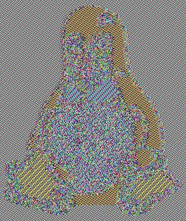

Cryptography and Network Security - Principles and Practice, 8th Edition, William Stallings
https://delors.github.io/sec-blockchiffre-operationsmodi/kontrollfragen.de.rst.html
Eine Technik zur Verbesserung der Wirkung eines kryptografischen Algorithmus oder zur Anpassung des Algorithmus an ein Anwendungsszenario. Insbesondere in Abhängigkeit von der Länge des Klartexts.
Um eine Blockchiffre in einer Vielzahl von Anwendungen einsetzen zu können, hat das NIST fünf Betriebsmodi definiert.
Die fünf Modi decken eine breite Palette von Verschlüsselungsanwendungen ab, für die eine Blockchiffre verwendet werden kann.
Diese Modi sind für die Verwendung mit jeder symmetrischen Blockchiffre vorgesehen, einschließlich 3DES und AES.
PKCS#7
Füllt den restlichen Block mit Bytes, deren Wert gleich der Anzahl hinzugefügter Bytes ist.
ANSI X.923
Auffüllen mit 0x00, außer dem letzten Byte, das die Anzahl Padding-Bytes angibt.
ISO/IEC 7816-4
Beginnt mit 0x80, gefolgt von Nullen.
Zero Padding
Füllt mit Nullen (0x00) auf.
Verhalten bei voller Blockgröße - Zusammenfassung
Angenommen, die Nachricht ist exakt 16 Byte lang (z. B. "1234567890ABCDEF"), so ergibt sich:
Padding-Modus |
Erweiterte Nachricht (hex) |
|---|---|
PKCS#7 |
... 10 10 10 10 10 10 10 10 10 10 10 10 10 10 10 10 |
ANSI X.923 |
... 00 00 00 00 00 00 00 00 00 00 00 00 00 00 00 10 |
ISO/IEC 7816-4 |
... 80 00 00 00 00 00 00 00 00 00 00 00 00 00 00 00 |
Zero Padding |
... 00 00 00 00 00 00 00 00 00 00 00 00 00 00 00 00 |
ECB-Tux - der Linux-Pinguin verschlüsselt im ECB-Modus:

Kriterien und Eigenschaften für die Bewertung und Konstruktion von Blockchiffre-Betriebsarten, die ECB überlegen sind.
Overhead
Fehlerbehebung
Fehlerfortpflanzung
Streuung
Sicherheit
Bei AES, DES oder jeder anderen Blockchiffre erfolgt die Verschlüsselung immer Block-für-Block mit Blockgrößen von b Bits:
Im Fall von (3)DES: b = 64
Im Fall von AES: b = 128
kann von der Parallelisierung der Hardware profitieren
leicht parallelisierbar in Software
die Verschlüsselung der Zähler
der i-te Block des Klartextes/des Chiffretextes kann im Zufallszugriff verarbeitet werden
genauso sicher wie die anderen Verfahren
es wird nur der Verschlüsselungsalgorithmus benötigt
Modus |
Beschreibung |
Typische Anwendung |
|---|---|---|
Electronic Codebook (ECB) |
Jeder Block von Klartextbits wird unabhängig voneinander mit demselben Schlüssel verschlüsselt. |
|
Cipher Block Chaining (CBC) |
Die Eingabe für den Verschlüsselungsalgorithmus ist die XOR-Verknüpfung des nächsten Klartextblocks mit dem vorangegangenen Chiffretextblock. |
|
Cipher Feedback (CFB) |
Die Eingabe wird Bit für Bit verarbeitet. Der vorhergehende Chiffretext wird als Eingabe für den Verschlüsselungsalgorithmus verwendet, um eine pseudozufällige Ausgabe zu erzeugen, die mit dem Klartext XOR-verknüpft wird, um die nächste Einheit des Chiffretextes zu erzeugen. |
|
Output Feedback (OFB) |
Ähnlich wie CFB, mit dem Unterschied, dass die Eingabe für den Verschlüsselungsalgorithmus die vorangegangene Verschlüsselungsausgabe ist, und volle Blöcke verwendet werden. |
|
Counter (CTR) |
Jeder Klartextblock wird mit einem verschlüsselten Zähler XOR-verknüpft. Der Zähler wird für jeden nachfolgenden Block erhöht. |
|
2010 vom NIST als zusätzlicher Blockchiffre-Betriebsmodus genehmigt.
Modus ist auch ein IEEE-Standard, IEEE Std 1619-2007
Die Norm beschreibt eine Verschlüsselungsmethode für Daten, die in sektor-basierten Geräten gespeichert sind, wobei das Bedrohungsmodell einen möglichen Zugriff des Gegners auf die gespeicherten Daten beinhaltet.
Hat breite Unterstützung der Industrie erhalten.
Der XTS-AES-Modus basiert auf dem Konzept einer veränderbaren (tweakable) Blockchiffre.
Um den Chiffriertext zu berechnen, wird benötigt:
Klartext
Symmetrischer Schlüssel
Tweak
Der Tweak muss nicht geheim gehalten werden; der Zweck ist, Variabilität zu bieten.
Ein Tweak ist insbesondere bei der Verschlüsselung von Daten auf Speichergeräten wichtig, da der gleiche Klartext an verschiedenen Stellen in verschiedene Chiffretexte verschlüsselt wird, aber immer in denselben Chiffretext, wenn er wieder an dieselbe Stelle geschrieben wird. Ein Tweak ist ein Modifikator, der für die unterschiedliche Verarbeitung gleicher Daten sorgt.
Der j-te Block des Klartexts. Alle Blöcke haben eine feste Länge. Eine (Klartext)dateneinheit – in der Regel ein Festplattensektor – besteht aus einer Folge von Klartextblöcken.
Der j-te Block des Chiffretextes.
Die fortlaufende Nummer des Blocks innerhalb der Dateneinheit.
Der Wert des Tweaks.
Die Anforderungen an die Verschlüsselung gespeicherter Daten, die auch als data at rest bezeichnet werden, unterscheiden sich von denen für übertragene Daten.
Die IEEE Norm P1619 wurde in Hinblick auf folgende Eigenschaften entwickelt:
Der Chiffretext ist für einen Angreifer frei verfügbar.
Das Datenlayout wird auf dem Speichermedium und beim Transport nicht verändert.
Der Zugriff auf die Daten erfolgt in Blöcken fester Größe und unabhängig voneinander.
Die Verschlüsselung erfolgt in 16-Byte-Blöcken, die unabhängig voneinander sind.
Es werden keine weiteren Metadaten verwendet, außer der Position der Datenblöcke innerhalb des gesamten Datensatzes.
Derselbe Klartext wird an verschiedenen Stellen in verschiedene Chiffretexte verschlüsselt, aber immer in denselben Chiffretext, wenn er wieder an dieselbe Stelle geschrieben wird.
Ein standardkonformes Gerät kann für die Entschlüsselung von Daten konstruiert werden, die von einem anderen standardkonformen Gerät verschlüsselt wurden.
es gilt: Schlüssel = Schlüssel1 || Schlüssel2
Der j-te Block des Klartexts. Alle Blöcke haben eine Länge von 128 bits. Eine (Klartext)dateneinheit – in der Regel ein Festplattensektor – besteht aus einer Folge von Klartextblöcken.
Der j-te Block des Chiffretextes.
Die fortlaufende Nummer des 128-Bit-Blocks innerhalb der Dateneinheit.
Der Wert des 128-Bit-Tweaks.
Ein primitives Element des GF(2¹²⁸) welches dem Polynom x (d. h. 0000...0010b) entspricht.
⍺ j mal mit sich selbst multipliziert im Körper GF(2¹²⁸)
Bitwise XOR
Modulare Multiplikation mit Binärkoeffizienten modulo x¹²⁸+x⁷+x²+x+1.
CTS erlaubt die Verwendung einer klassischen Blockchiffre mit den Operationsmodi ECB und CBC auch dann, wenn die Nachrichtenlänge größer als die Blockgröße, aber kein Vielfaches davon ist — und zwar so, dass der Ciphertext nicht länger als der Plaintext wird.
ECB-CTS
Notwendigkeit von Padding
In welchen Betriebsarten ist eine Auffüllung (Padding) notwendig?
Durchführen von Padding
Die Blockchiffre arbeitet mit einer Blockgröße von 8 Byte. Gegeben seien die folgenden zwei Nachrichten (hexadezimal):
4D 65 73 73 61 67 65 (7 Byte)
48 61 73 68 46 75 6E 6B (8 Byte)
Geben Sie für jede Nachricht den vollständigen, aufgefüllten Block (bzw. die Blöcke) an gemäß:
PKCS#7,
ANSI X.923
ISO/IEC 7816-4
Der Initialisierungsvektor (IV) bei CBC
Warum ist es bei CBC wichtig, den Initialisierungsvektor (IV) zu schützen?
Auswirkungen eines Bitflips
Was geschieht im Falle eines Übertragungsfehlers (einzelner Bitflip im Chiffretext) bei ECB, CBC, CFB, OFB, CTR?
Nonce bei OFB
Warum muss der IV bei OFB eine Nonce sein?
Eine Nonce (Number used ONCE) ist eine Zahl, die nur einmal für die Ausführung des Verschlüsselungsalgorithmus verwendet wird.
CTR Mode - Anforderungen and den IV?
Wenn beim Counter Mode garantiert ist, dass der Schlüssel niemals wiederverwendet wird (zum Beispiel, weil er ein Session Key ist), kann dann für die Nonce in diesem speziellen Fall auch eine Konstante verwendet werden?
ECB identifizieren
Sie möchten feststellen, ob ein Programm zur Verschlüsselung von Dateien den ECB-Modus verwendet. Was müssen Sie tun?
XTS-AES
Wie viele Blöcke hat eine Dateneinheit, wenn ein Festplattensektor 4 KiB groß ist?
Welchen praktischen Vorteil hat es, das der Hash T vor und nach der Verschlüsselung des Klartextes mit dem aktuellen Wert XOR-verknüpft wird?
CTS und XTS-AES
Warum findet CTS im Allgemeinen bei Full-Disk-Encryption (FDE) keine Anwendung bzw. ist nicht notwendig?
OFB-Modus
Verwenden Sie den OFB-Modus in Kombination mit einer Caesar-Chiffre, bei der die Blockgröße ein Zeichen sei.
Der Schlüssel ist die Anzahl der Zeichen, um die Sie ein Zeichen verschieben wollen - wie zuvor. Der IV ist ein Zeichen. Damit Sie ein XOR durchführen können, ordnen wir jedem Zeichen einen Wert zu und erweitern das Alphabet um die folgenden 6 Zeichen: { 1, 2, 3, !, ?, _ }. Auf diese Weise ist es immer möglich, ein sinnvolles Zeichen auszugeben.
Daraus ergibt sich die folgende Kodierung:
Idx. |
Zeichen |
Binär |
|---|---|---|
0 |
A |
00000 |
1 |
B |
00001 |
2 |
C |
00010 |
3 |
D |
00011 |
4 |
E |
00100 |
5 |
F |
00101 |
6 |
G |
00110 |
7 |
H |
00111 |
8 |
I |
01000 |
9 |
J |
01001 |
10 |
K |
01010 |
Idx. |
Zeichen |
Binär |
|---|---|---|
11 |
L |
01011 |
12 |
M |
01100 |
13 |
N |
01101 |
14 |
O |
01110 |
15 |
P |
01111 |
16 |
Q |
10000 |
17 |
R |
10001 |
18 |
S |
10010 |
19 |
T |
10011 |
20 |
U |
10100 |
21 |
V |
10101 |
Idx. |
Zeichen |
Binär |
|---|---|---|
22 |
W |
10110 |
23 |
X |
10111 |
24 |
Y |
11000 |
25 |
Z |
11001 |
26 |
1 |
11010 |
27 |
2 |
11011 |
28 |
3 |
11100 |
29 |
! |
11101 |
30 |
? |
11110 |
31 |
_ |
11111 |
Verschlüsseln Sie nun die Nachricht "hello" (k = 3 und IV = !) mit dieser Chiffre.
Entschlüsseln Sie nun die Nachricht "OCEBL_RLI1MELOA". Der IV ist A und der Schlüssel ist 3.
Welchen Effekt hat die Anwendung des OFB-Modus auf die Nachrichten?